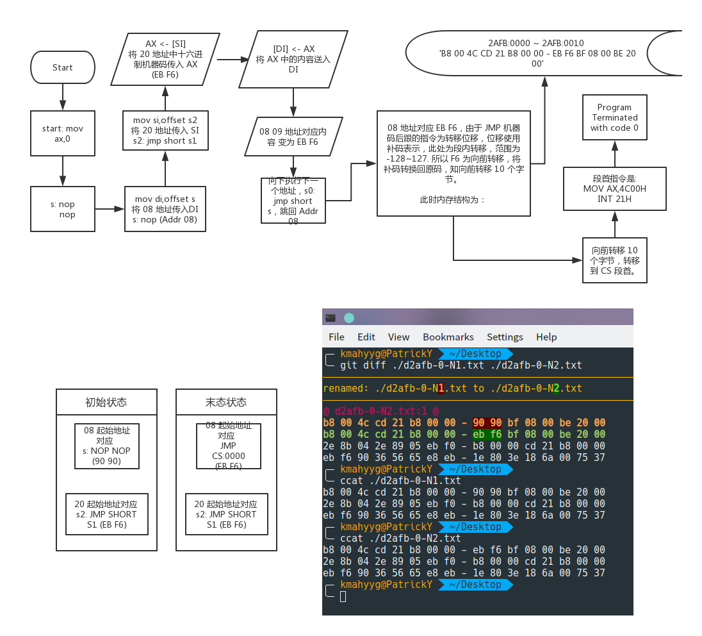
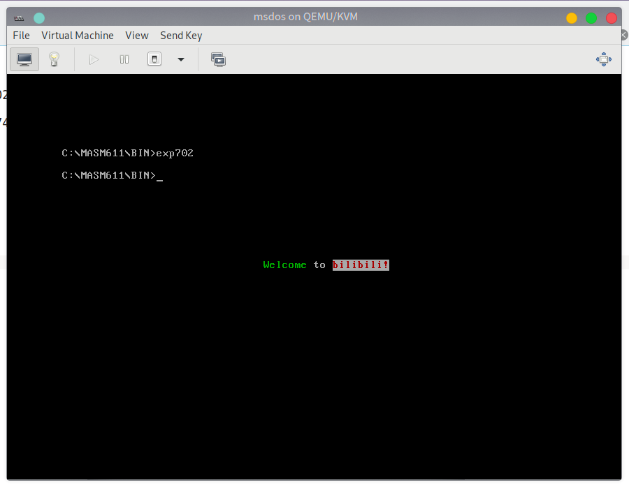

实验七：位移指令
实验目的
加深对 3.7 ~ 3.9 节 和 附注 3 内容的理解，学会基础应用。
实验题目
Quiz 1： 代码分析
点击此处下载程序 ，下载后分析代码并尝试编译运行，之后请回答下列问题：
- 这个程序可以正确返回吗？
- 若不能，请猜测作者写这个程序的意图和本应返回的值。
- 若能，请分析程序流程。
Quiz 2： 根据材料编程
请务必 独立认真 完成。
题目：编程，屏幕中心分别显示绿色、黑底白色、白底红色字符串 'welcome to bilibili!'
查阅资料：
80×25 彩色字符模式显示缓冲区结构：参见此处
实验所需的数据记录
'welcome to bilibili!'
对应的十六进制数据 为： （此处是低位到高位！写程序时应当从高位到低位。）
57 02 65 02 6C 02 63 02 6F 02 6D 02 65 02 20 02 74 07 6F 07 20 07 62 74 69 74 6C 74 69 74 62 74 69 74 6C 74 69 74 21 74
实验后的分析与结果记录
Quiz 1
- 不能。
- 作者原本的意图是将 S2 段的代码拷贝到 S 段开头的两行，之后清空 AX 并退出程序。
- 见下图。对这个图片有疑问的朋友，请参考本书 附注三

Quiz 2
点击此处下载作者编写好的程序
结果展示 
实验反思
请你在评论区写下你做实验过程的遇到的坑，并告诉大家你是怎么解决的，也写下自己在实验前哪些地方理解不到位或觉得很难的地方，供其他朋友参考。